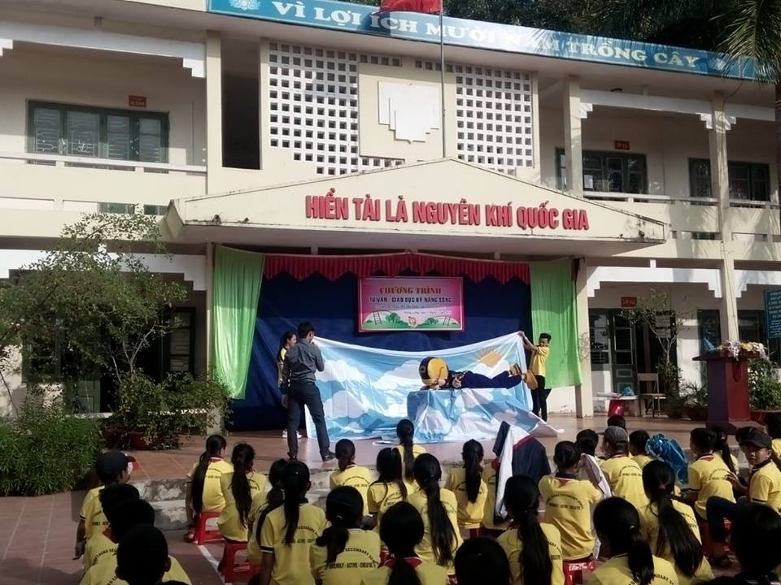
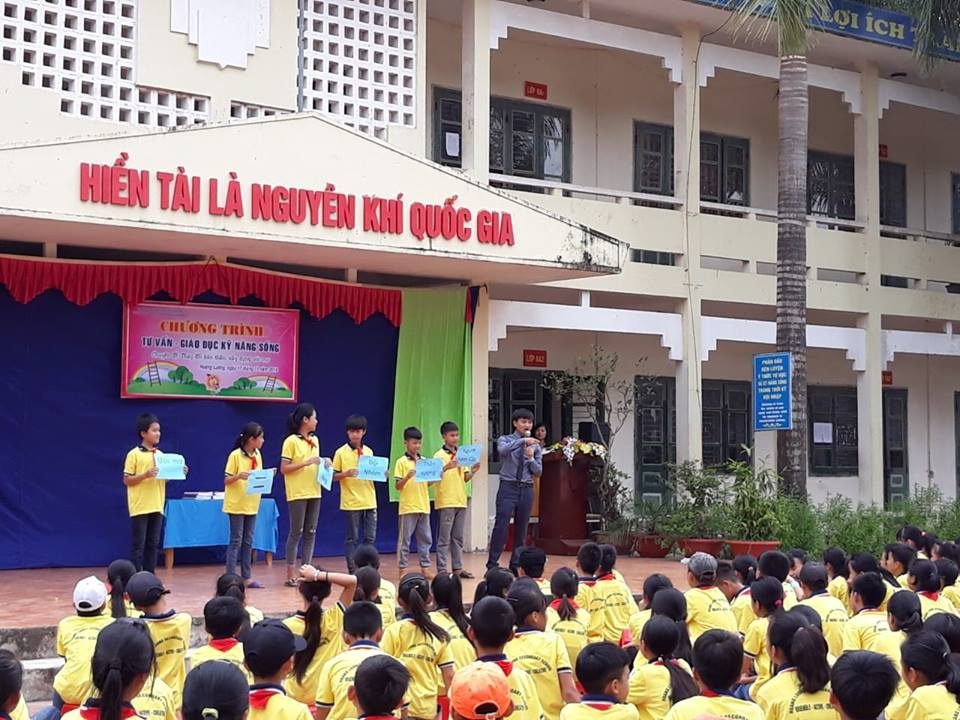
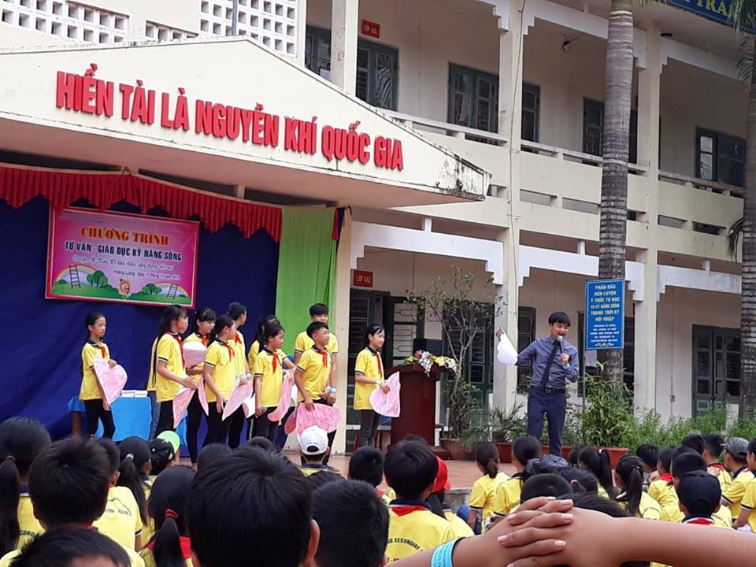
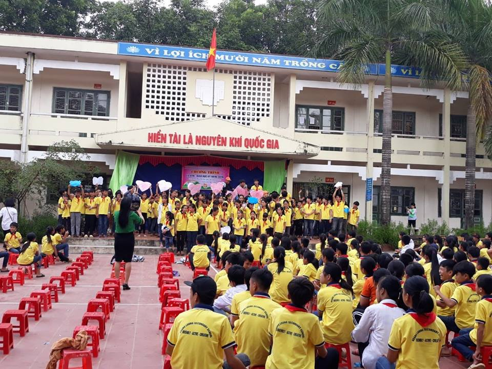
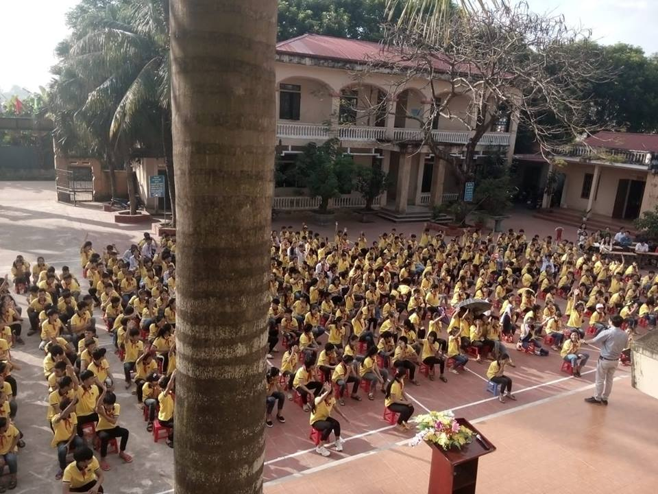

Một số hình ảnh về hoạt động giáo dục kỹ năng sống năm học 2018-2019
Một số hình ảnh về hoạt động giáo dục kỹ năng sống năm học 2018-2019
Đã có ai đó nói với bạn thế này chưa: "Hãy cứ mơ ước đi, vì không ai đánh thuế ước mơ của bạn cả". Nhưng thực lòng họ đâu có hiểu, người không có ước mơ thì sẽ mơ ước điều gì?
Cuộc sống cứ thế trôi, khi xung quanh bạn bè đều có những dự định riêng, những hướng đi riêng. Người thì cố gắng học thật tốt để đi du học, người thì chọn làm nghệ thuật, rồi kĩ sư, giáo viên, bác sĩ… chỉ có bạn là vẫn đang loay hoay đi tìm những ước mơ.
Liệu có ai hiểu được cảm giác khi không biết mình thực sự thích gì, muốn gì và mục đích sống của mình là gì? Không ai gặm nhấm nỗi bi quan đó ngoài bạn. Đừng phí hoài những ngày tháng lẽ ra phải tận hưởng hương vị của cuộc sống mà thay vào đó lại mài dũa đi sự lạc quan và lòng yêu đời của bạn.
Khi có cơ hội, hãy thử nắm bắt
Nếu bạn có một chút hào hứng với một công việc nào đó, hãy thử làm nó. Người ta thường nói: "Nghề chọn mình, mình không chọn nghề". Thế nên, nếu đã nắm bắt rồi mà thấy không phù hợp, bạn có thể chọn cách từ bỏ. Còn khi đã bước vào và nhận ra đây chính là mảnh đất của bạn thì hãy lạc quan lên. Bạn đã tìm ra chính mình rồi đó.
Đừng e ngại về khả năng của bản thân
Bạn muốn làm một công việc nhưng lại chần chừ vì nghĩ rằng mình không đủ khả năng, hãy tự tin lên. Không ai là chuyên nghiệp khi mới bắt đầu bất kể một công việc nào. Nếu bạn chưa biết, môi trường sẽ đào tạo bạn, cấp trên sẽ chỉ cho bạn và đồng nghiệp sẽ giúp đỡ bạn.
Chính suy nghĩ này khiến cho bạn bị chững lại trên con đường tìm kiếm ước mơ của mình. Đôi khi, bạn có khả năng làm nó, đam mê nó nhưng lại bị những suy nghĩ tiêu cực cản trở, dẫn đến không biết bản thân muốn gì và có làm được nó hay không.
Tập xây dựng cho mình từ những ước mơ nhỏ
Bạn hãy thử nghĩ xem: Có phải người nông dân chỉ ước mơ sống với mảnh ruộng và con trâu của họ? Tất nhiên là không phải như vậy. Ai cũng muốn cuộc sống của mình tốt đẹp hơn từng ngày. Vì thế mà người nông dân vẫn phải ra đồng làm ruộng để kiếm tiền và thực hiện những ước mơ khác. Bạn cũng vậy, hãy tập trả lời những câu hỏi như: "Ngày hôm nay mình cần gì?" hay "Ngày mai thì mình cần gì?". Từng bước một, bạn sẽ tự tìm ra được con đường cho bản thân.
Đừng làm những điều người khác cho là tốt. Hãy làm điều mà bản thân bạn thấy hợp
Khi bạn thật sự đang làm cái mà bạn thích, nó sẽ rất thoải mái. Còn khi bạn làm điều mà người khác muốn chứ không phải bạn, thì đó là một sự gượng ép và sẽ không có kết quả tốt. Làm theo để vừa lòng một ai đó chỉ khiến cho bạn mơ hồ hơn với ước mơ của chính mình.
Một người không có ước mơ thì cũng chả sao cả. Ước mơ thì có thể tìm và thay đổi được, nhưng sự lạc quan thì không. Đừng bao giờ đánh mất sự lạc quan của mình chỉ bởi không biết rõ tương lai của mình sẽ đi về đâu. Cứ đi rồi sẽ đến, ước mơ cũng vậy, cứ tìm rồi sẽ thấy nếu bạn luôn cố gắng không ngừng.
Một số hình ảnh về hoạt động giáo dục kỹ năng sống năm học 2018-2019 của trường THCS Hoàng Lương


